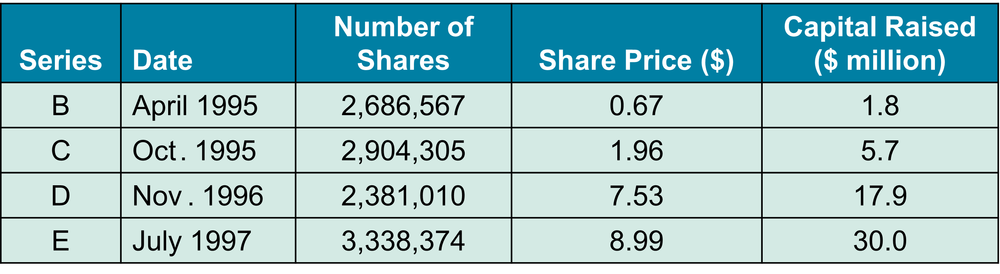
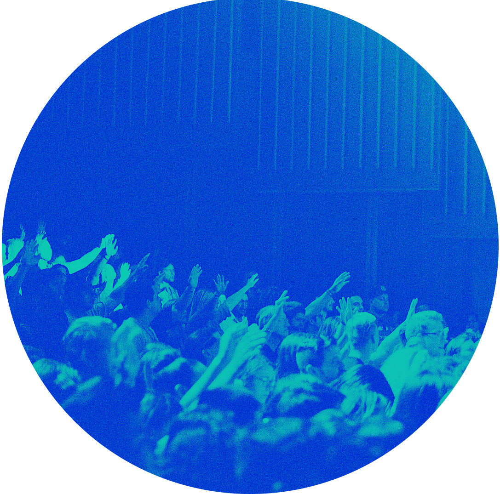
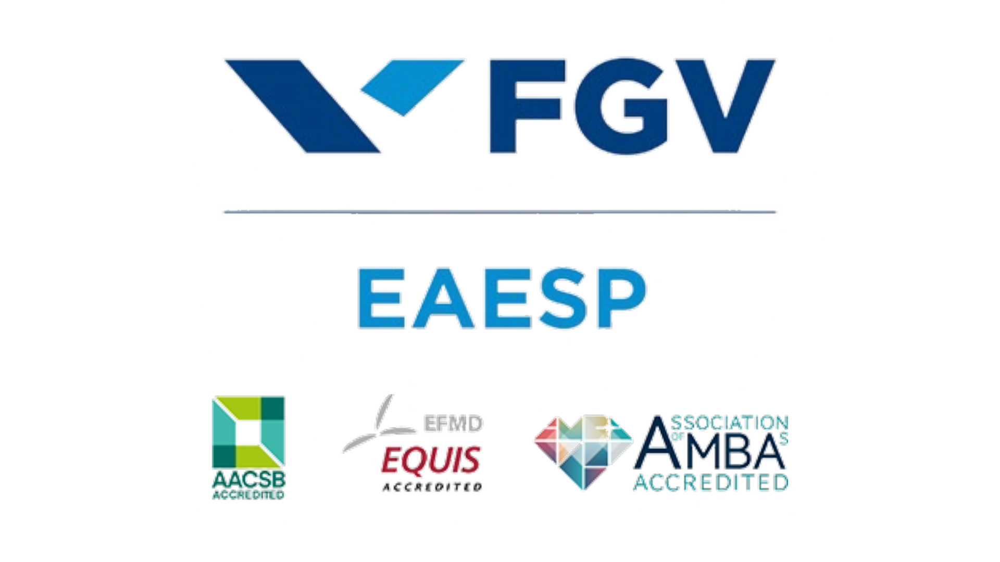

Estratégia Financeira
Part 1 - ch.23 Raising Equity Capital
31-12-2023
Chapter Outline
23.1 Equity Financing for Private Companies
23.2 The Initial Public Offering
23.3 IPO Puzzles
23.4 The Seasoned Equity Offering
23.1 Equity Financing for Private Comp.
23.1 Equity Financing for Private Comp.
The initial capital that is required to start a business is usually provided by the entrepreneur.
Often, a private company must seek outside sources that can provide additional capital for growth.
It is important to understand how the infusion of outside capital will affect the control of the company.
23.1 Equity Financing for Private Comp.
Sources of funding: Angel Investors
- Individual Investors who buy equity in small private firms. Angel investors are often rich, successful entrepreneurs themselves who are willing to help new companies get started in exchange for a share of the business.
- The angel investment is usually necessary to kick off the business and the angel market is more well organized these days.
- Angel financing often occurs at such an early stage in the business that it is difficult to assess a value for the firm. Angel investors often circumvent this problem by holding either a convertible note or a SAFE (simple agreement for future equity) rather than equity.
- Usually, angel investors have a share price discount over new investors.
- Structuring the deal in this way allows angels and entrepreneurs to agree on terms without agreeing on a value for the firm, instead postponing the valuation decision until the firm is more mature and attractive to venture capitalists.
23.1 Equity Financing for Private Comp.
Venture Capital Firm
A limited partnership that specializes in raising money to invest in the private equity of young firms.
Venture Capitalists
One of the general partners who work for and run a venture capital firm.
VC firms offer limited partners advantages over investing directly in start-ups themselves as angel investors.
Limited partners are more diversified.
They also benefit from the expertise of the general partners.
General partners usually charge substantial fees: over the return they make (carried interest) plus a an annual management fee of about 2% of the fund’s committed capital.
Usually, they demand great control (e.g., board seats).
23.1 Equity Financing for Private Comp.
Private Equity Firms
- Organized very much like a venture capital firm, but it invests in the equity of existing privately held firms rather than start-up companies.
- Private equity firms also might initiate their investment by finding a publicly traded firm and purchasing the outstanding equity, thereby taking the company private in a transaction called a leveraged buyout (LBO).
- In most cases, the private equity firms use debt as well as equity to finance the purchase.
- Private equity firms also charge fees.
- Market value of PE firms greater than VC.
23.1 Equity Financing for Private Comp.
Institutional Investors
- Institutional investors, such as pension funds, insurance companies, endowments, and foundations, are active investors in private companies.
- Institutional investors may invest directly in private firms or they may invest indirectly by becoming limited partners in venture capital firms.
Ex. Blackrock funds, Vanguard funds.
23.1 Equity Financing for Private Comp.
Corporate Investors
- A corporation that invests in private companies.
- Also known as corporate partner, strategic partner, and strategic investor.
- Although most other types of investors in private firms are primarily interested in the financial returns of their investments, corporate investors might invest for corporate strategic objectives, in addition to the financial returns.
Ex. Google.
23.1 Equity Financing for Private Comp.
Venture capital investing
When a company founder decides to sell equity to outside investors for the first time, it is common practice for private companies to issue preferred stock rather than common stock to raise capital.
Preferred Stock
- Preferred stock issued by mature companies usually has a preferential dividend and seniority in any liquidation and sometimes special voting rights.
- Preferred stock issued by young companies has seniority in any liquidation but typically does not pay regular cash dividends and often contains a right to convert to common stock.
Convertible Preferred Stock
Preferred stock that gives the owner an option to convert it into common stock on some future date.
23.1 Equity Financing for Private Comp.
Each time the firm raises money is referred to as a funding round, and each round will have its own set of securities with special terms and provisions.
After a potential initial “seed round,” it is common to name the securities alphabetically, starting with Series A, Series B, etc
Only then, the company has a market value.
23.1 Equity Financing for Private Comp.
Book’s example.
- Real Networks, which was founded by Robert Glaser in 1993, with an investment of approximately 1 million by Glaser.
- In April 1995, Glaser’s 1 million initial investment represented 13,713,439 shares of Series A preferred stock, implying an initial price of about $0.07 per share.
- The company’s first round of outside equity funding was Series B preferred stock. Real Networks sold 2,686,567 shares of Series B preferred stock at 0.67 per share.
- At the price the new shares were sold for, Glaser’s shares were worth 9.2 million and represented 83.6% of the outstanding shares.

I understand
23.1 Equity Financing for Private Comp.
Pre-Money Valuation
- At the issuance of new equity, the value of the firm’s prior shares outstanding at the price in the funding round
- 9.2 million in the RealNetworks example
Post-Money Valuation
- At the issue of new equity, the value of the whole firm (old plus new shares) at the price at which the new equity sold
- 11.0 million in the RealNetworks example
23.1 Equity Financing for Private Comp.
Over the next few years, Real Networks raised three more rounds of outside equity in addition to the Series B funding round
23.2 The Initial Public Offering
23.2 The Initial Public Offering
Initial Public Offering (IPO)
The process of selling stock to the public for the first time.
It allows greater liquidity, and better access to capital at the cost of more external monitoring and more demand for transparency.
Primary Offering: New shares available in a public offering that raise new capital
Secondary Offering: Shares sold by existing shareholders in an equity offering
Underwriter
An investment banking firm that manages a security issuance and designs its structure.
23.2 The Initial Public Offering
Best-Efforts Basis: For smaller IPOs, a situation in which the underwriter does not guarantee that the stock will be sold, but instead tries to sell the sock for the best possible price. Often such deals have an all-or-none clause: either all of the shares are sold on the IPO or the deal is called off.
Firm Commitment: An agreement between an underwriter and an issuing firm in which the underwriter guarantees that it will sell all of the stock at the offer price. Most common.
Auction IPO: A method of selling new issues directly to the public rather than setting a price itself and then allocating shares to buyers, the underwriter in an auction IPO takes bids from investors and then sets the price that clears the market.
23.2 The Initial Public Offering
Problem
- Ashton, Inc., is selling 900,000 shares of stock in an auction IPO.
- At the end of the bidding period, Ashton’s investment bank has received the following bids. What will be the offer price of the shares?
Solution: The winning auction price would be 9.25.
23.2 The Initial Public Offering
Lead Underwriter: The primary investment banking firm responsible for managing a security issuance.
Syndicate: A group of underwriters who jointly underwrite and distribute a security issuance.
- Underwriters market the IPO, and they help the company with all the necessary filings.
- More importantly, they actively participate in determining the offer price.
- In many cases, the underwriter will also commit to making a market in the stock after the issue, thereby guaranteeing that the stock will be liquid.
23.2 The Initial Public Offering
Filings
Registration Statement: A legal document that provides financial and other information about a company to investors prior to a security issuance. Company managers work closely with the underwriters to prepare this registration statement.
Preliminary Prospectus: Part of the registration statement prepared by a company prior to an IPO that is circulated to investors before the stock is offered.
Final Prospectus: Part of the final registration statement prepared by a company prior to an IPO that contains all the details of the offering, including the number of shares offered and the offer price. This document is created only after carefull revision.
23.2 The Initial Public Offering
Valuation: There are two ways to value a company: a) Compute the present value of the estimated future cash flows, or B) Estimate the value by examining comparables (recent IPOs).
Road Show: During an IPO, when a company’s senior management and its underwriters travel around promoting the company and explaining their rationale for an offer price to the underwriters’ largest customers, mainly institutional investors such as mutual funds and pension funds.
Book Building: A process used by underwriters for coming up with an offer price based on customers’ expressions of interest. The book-building process provides an early indication of demand for the IPO. If demand appears to be weak in the target price range, the firm may choose to withdraw from the IPO process.
23.2 The Initial Public Offering
Spread: The fee a company pays to its underwriters that is a percentage of the issue price of a share of stock.
- For instance, consider the final offer price is 12.50 per share, and the company paid the underwriters a spread of $0.875 per share, exactly 7% of the issue price.
- The underwriters buy the stock for 11.625 per share and then resold it to their customers for $12.50 per share.
- When an underwriter provides a firm commitment, it is potentially exposing itself to the risk that the banking firm might have to sell the shares at less than the offer price and take a loss.
- However, research shows that about 75% of IPOs experience an increase in share price on the first day (only 9% experience a decrease).
23.2 The Initial Public Offering
Over-allotment allocation (greenshoe provision): In an IPO, an option that allows the underwriter to issue more stock, usually amounting to some % of the original offer size, at the IPO offer price.
Lockup: A restriction that prevents existing shareholders from selling their shares for some period, usually 180 days, after an IPO.
23.3 IPO Puzzles
23.3 IPO Puzzles
On average, IPOs appear to be underpriced: The price at the end of trading on the first day is often substantially higher than the IPO price.
The number of issues is highly cyclical: When times are good, the market is flooded with new issues; when times are bad, the number of issues dries up.
The costs of an IPO are very high, and it is unclear why firms willingly incur them (source: Berk & DeMarzo).
The long-run performance of a newly public company (three to five years from the date of issue) is poor. That is, on average, a three- to five-year buy and hold strategy appears to be a bad investment.
23.3 IPO Puzzles
Underpricing
- Generally, underwriters set the issue price so that the average first-day return is positive.
- Research has found that about 75% of first-day returns are positive. The average first-day return in the United States is 17%.
- The underwriters benefit from the under pricing because it allows them to manage their risk.
- The pre-IPO shareholders bear the cost of underpricing.
- In effect, these owners are selling stock in their firm for less than they could get in the aftermarket.
23.3 IPO Puzzles
Underpricing
- Although IPO returns are attractive, all investors cannot earn these returns.
- When an IPO goes well, the demand for the stock exceeds the supply.
- Thus the allocation of shares for each investor is rationed.
- When an IPO does not go well, demand at the issue price is weak, so all initial orders are filled completely.
- Thus, the typical investor will have their investment in “good” IPOs rationed while fully investing in “bad” IPOs.
Winner’s Curse: Refers to a situation in competitive bidding when the high bidder, by virtue of being the high bidder, has very likely overestimated the value of the item being bid on. You “win” (get all the shares you requested) when demand for the shares by others is low and the IPO is more likely to perform poorly.
23.3 IPO Puzzles
Cyclicality and Recent Trends
- The number of issues is highly cyclical.
- When times are good, the market is flooded with new issues; when times are bad, the number of issues dries up.
- What is surprising is the magnitude of the swings.
- Another striking feature of the data in the following figure is that while the average dollar volume of IPOs since 2000 has been similar to that in the 1990s, the average number of IPOs per year has fallen significantly.
23.3 IPO Puzzles
Costs of an IPO
- A typical spread is 7% of the issue price.
- By most standards, this fee is large, especially considering the additional cost to the firm associated with underpricing.
- It is puzzling that there seems to be a lack of sensitivity of fees to issue size.
- One possible explanation is that by charging lower fees, an underwriter may risk signaling that it is not the same quality as its higher priced competitors.
23.3 IPO Puzzles
Long-Run Underperformance
Although shares of IPOs generally perform very well immediately following the public offering, it has been shown that newly listed firms subsequently appear to perform relatively poorly over the following three to five years after their IPOs.
23.4 The Seasoned Equity Offering
23.4 The Seasoned Equity Offering
Seasoned Equity Offering (SEO)
- When a public company offers new shares for sale
- Public firms use SEOs to raise additional equity.
- When a firm issues stock using an SEO, it follows many of the same steps as for an IPO.
- The main difference is that a market price for the stock already exists, so the price-setting process is not necessary.
Primary Shares: New shares issued by a company in an equity offering.
Secondary Shares: Shares sold by existing shareholders in an equity offering.
23.4 The Seasoned Equity Offering
There are two types of seasoned equity offerings.
Cash Offer: A type of SEO in which a firm offers the new shares to investors at large.
Rights Offer: A type of SEO in which a firm offers the new shares only to existing shareholders.
- Rights offers protect existing shareholders from underpricing.
23.4 The Seasoned Equity Offering
Rights offers protect existing shareholders from underpricing.
- Suppose a firm holds 100 in cash and has 50 shares out. Each share is worth 2.
- It announces a cash offer for 50 shares at 1 per share. Once this offer is complete, the company will have 150 in cash and 100 shares outstanding. The price per share is now 1.50. The new shareholders therefore receive a 0.50 windfall at the expense of the old shareholders.
- If it announces a rights offer, shareholders have the right to purchase an additional share for 1. If all shareholders chose to exercise their rights, then after the sale, the value of the firm is 150 with 100 shares outstanding and a price of 1.50 per share. In this case, however, the 0.50 windfall accrues to existing shareholders, which exactly offsets the drop in the stock price.
- By using a rights offering the firm can continue to issue equity without imposing a loss on its current shareholders.
23.4 The Seasoned Equity Offering
Price Reaction
- Researchers have found that, on average, the market greets the news of an SEO with a price decline. This is consistent with the adverse selection discussed in Chapter 16.
Issuance Costs
- Although not as costly as IPOs, seasoned offerings are still expensive. Underwriting fees amount to 5% of the proceeds of the issue. Rights offers have lower costs than cash offers.
Problems
Question 1
Question 1
Question 2
Easy:
Hard:
Question 3
Easy:
Hard:
Question 4
Easy:
Hard:
Question 5
Easy:
Hard:
How did you like this lecture?
Your response:
THANK YOU!
QUESTIONS?

Henrique C. Martins

[Henrique C. Martins] [henrique.martins@fgv.br] [Teaching Resources] [Comments]
Comments?